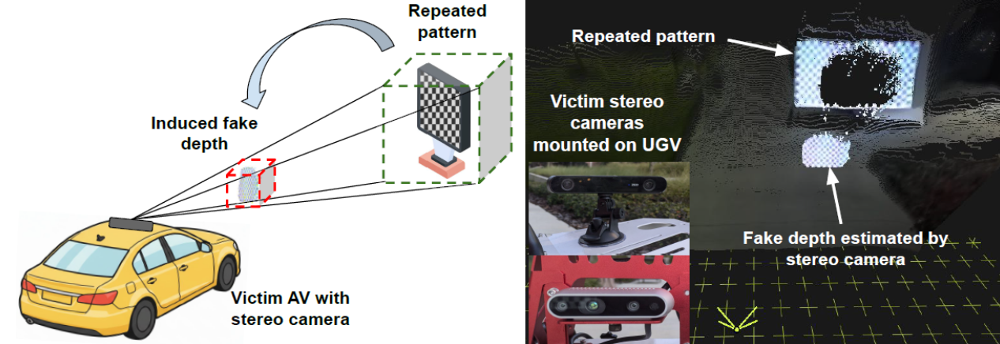
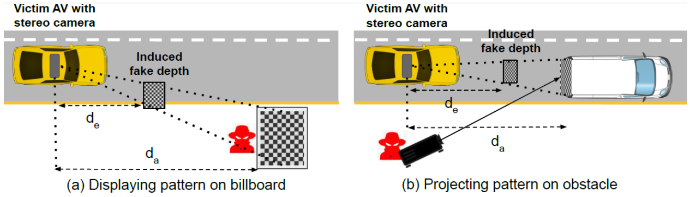
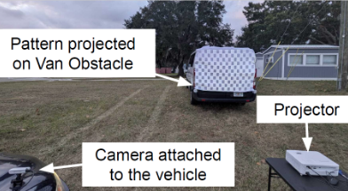
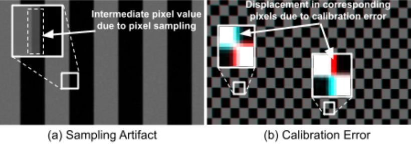

Illusion of Depth
Revealing Hidden Stereo Vision Vulnerabilities in Depth Estimation
Stereo cameras are integrated into autonomous systems such as self-driving cars, drones, and robots to offer precise depth estimation in a cost-effective manner compared to LiDAR technology. In this work, we reveal intrinsic vulnerabilities in the stereo cameras' inherent image pixel sampling and calibration processes. Attackers can exploit these vulnerabilities by using simple repeated patterns to exert fine-grained control over the estimated depth of genuine obstacles. Rather than inducing random depth errors, an attacker can systematically manipulate the depth of obstacles perceived by the victim autonomous systems.

To appear in ACM CCS 2026, The Hague, Netherlands. The artifacts of this work, including the data and scripts to evaluate the attack and the proposed defense, are available at Zenodo.
Demonstration of the Attack
We assess the attack on two popular stereo cameras, ZED2 and RealSense D435i, in real-world driving conditions with the vehicle moving up to speeds of 15 km/h. The attack persists for at least 0.5 sec in both day and night lighting conditions, sufficient to trigger emergency braking or unsafe maneuvers in state-of-the-art autonomous driving frameworks.


The Hidden Vulnerabilities
Our study identifies two intrinsic characteristics of stereo cameras that enable depth manipulation:
(a) Sampling Artifacts. Pixel-level distortions introduced when continuous visual data is discretized into pixels on an image sensor. These artifacts produce intermediate pixel intensity values at high-contrast boundaries.
(b) Calibration Errors. Pixel-level inaccuracies caused by manufacturing variations and lens distortions, which warp feature information used by stereo matching algorithms. These distortions cause corresponding pixels in the left and right images to be displaced in different directions.

Acknowledgments
We disclosed the vulnerability and our findings to the vendor. This research was supported in part by the JST CREST JPMJCR23M4, JST FOREST JPMJFR2531, JST Next-generation Edge AI Semiconductor JPMJES2515, and JSPS KAKENHI 24K02940 and 24K14943.